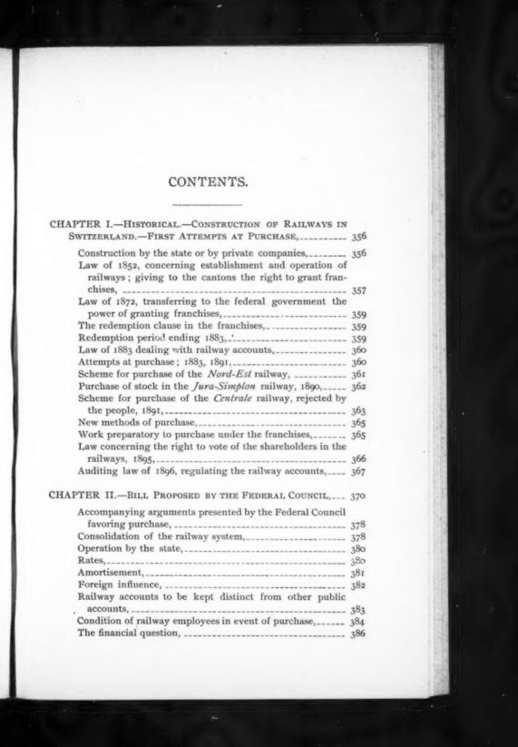

Micheli, 1898: a Suíça vota a compra das suas ferrovias
Leitura: 12 min
Horace Micheli narra como a Suíça, depois de meio século de ferrovias privadas, aprovou em referendo de fevereiro de 1898 a compra das cinco grandes companhias, e expõe os argumentos de cada lado.


Em 20 de fevereiro de 1898, cerca de 570 mil dos 734 mil eleitores suíços foram às urnas, a maior proporção já registrada, e aprovaram por 386.634 votos a 182.718 a lei que mandava a Confederação comprar as cinco principais companhias ferroviárias do país. Os dois lados esperavam uma diferença de no máximo 50 mil a 80 mil votos, e muitos observadores bem informados apostavam na rejeição. Para Horace Micheli, o voto encerrava na Suíça a política de operação privada das ferrovias seguida até então.
O relato saiu como State Purchase of Railways in Switzerland, nº 6 do terceiro volume dos Economic Studies, de dezembro de 1898. Micheli, correspondente suíço do Musée Social de Paris, escrevera o texto para a série de circulares do museu; o comitê de publicações da American Economic Association decidiu traduzi-lo pelo interesse do tema e pela dificuldade de obter informação organizada a respeito, e a tradução é de John Cummings. O estudo tem quatro capítulos: o histórico, o projeto do Conselho Federal, a discussão na Assembleia Federal e a campanha do referendo.
Como a Suíça chegou às ferrovias privadas?
A primeira ferrovia suíça, de Zurique a Baden, com 23 km, abriu em 9 de agosto de 1847 e foi construída por uma companhia privada. A questão de quem devia construir e operar as linhas, Estado ou empresas, apareceu desde o início. Consultados pelo governo, os engenheiros ingleses Stephenson e Swinburne recomendaram uma rede estatal do lago de Constança ao lago de Genebra, e o Conselho Federal apresentou em 1851 um projeto nesse sentido. Mas em 28 de julho de 1852 o Conselho Nacional decidiu, por 68 votos a 22, pela construção privada, e a lei daquele dia deu aos cantões o direito de conceder as linhas.
Micheli reconhece que a iniciativa privada, apesar dos erros iniciais, pagos só pelas companhias, cumpriu a tarefa e deu ao país uma rede que chega às regiões mais remotas, num território montanhoso. Em 1872, uma nova lei passou à União o poder de conceder ferrovias. Todas as concessões, cantonais ou federais, previam o resgate das linhas pela Confederação ao fim de prazos definidos.
Por que as primeiras tentativas de compra fracassaram?
O primeiro prazo de resgate venceu em 1º de maio de 1883. O Conselho Federal desaconselhou a compra, por expor a Confederação a grandes riscos financeiros, e propôs em troca uma lei de contabilidade das companhias; o Conselho Nacional concordou por 67 votos a 59. Veio então a chamada política de penetração: comprar ações para influir nas diretorias e chegar a um acordo amigável. Um contrato com a Nord-Est, em 1887 e 1888, foi retirado diante da oposição. Em 1890, a Confederação comprou 30 mil ações da Jura-Berne-Lucerne do cantão de Berna, a 600 francos cada, pagos em títulos federais de 3%; no fim de 1891 tinha 77.090 ações preferenciais da Jura-Simplon, cujo capital somava 104 mil ações preferenciais e 245 mil ordinárias.
A tentativa seguinte foi a Centrale, a companhia mais próspera. A Assembleia Federal votou pela compra de toda a empresa, mas 91.698 cidadãos pediram referendo, e em 6 de dezembro de 1891 os eleitores rejeitaram a compra por 289.406 votos a 130.729. Segundo Micheli, a maioria se formou com os que achavam que a Confederação pagava pelas ações mais do que valiam. A lição para o governo foi que o povo só aprovaria a compra se acreditasse que o Estado pagava barato, e a compra por acordo sempre parece cara, porque as companhias aceitam os termos.
O caminho escolhido foi exercer o direito de resgate previsto nas concessões, na primavera de 1898. Antes, duas leis prepararam o terreno. Uma, de 1895, só deu direito de voto nas assembleias às ações registradas em nome do dono seis meses antes, para reduzir a influência estrangeira; conseguiu o contrário, porque muitos pequenos acionistas suíços não registraram as ações, e os estrangeiros, com grandes lotes, sim. A outra, a lei de contabilidade das ferrovias de 1896, definiu o lucro líquido e o capital investido que serviriam de base ao preço e tirou dos tribunais arbitrais a decisão sobre as divergências.
O que propunha o Conselho Federal?
O projeto de 25 de março de 1897 mandava a Confederação comprar, na primeira data permitida pelas concessões, e operar por conta própria as redes da Jura-Simplon, da Centrale, da Nord-Est, da Union-Suisse e do Gotthard, com 2.578 km e todas as linhas principais. A compra seria financiada com empréstimos amortizados em sessenta anos. As contas ferroviárias ficariam separadas das demais contas públicas, e o lucro iria primeiro para juros e amortização e depois para baixar tarifas. A administração teria um conselho administrativo, uma diretoria-geral em Berna e diretorias distritais; só cidadãos suíços poderiam ser empregados.
Os argumentos da mensagem oficial, resumidos por Micheli, eram a economia de uma rede única, sem o trabalho improdutivo de cinco companhias acertando contas entre si; tarifas uniformes, que a mensagem deixava entender que seguiriam as mais baixas em vigor, embora o projeto não o garantisse; o subsídio das linhas fracas pelas lucrativas; e a necessidade de pagar a dívida até meados do século seguinte, como fariam França, Prússia e Áustria, sob pena de perder tráfego para vizinhos com ferrovias quitadas e tarifas menores. Aos ferroviários, a mensagem prometia salários uniformes, sem cortes nem demissões em massa, e o fim da resistência das companhias à lei de 22 de junho de 1890, que garantia 52 dias de descanso por ano, 17 deles domingos.
Outro argumento era a influência estrangeira. Por efeito da lei de 1895, os acionistas domiciliados fora do país passaram a ter maioria nas assembleias de três companhias, a Nord-Est, a Centrale e o Gotthard. A mensagem chamava isso de politicamente nocivo e humilhante para a Suíça, e financeiramente perigoso, porque os dividendos saíam do país em vez de pagar melhorias e amortizações.
O que mudou na Assembleia Federal?
Micheli descreve um apoio inicial morno e uma oposição que somava os adversários da estatização, os que a aceitavam em tese mas não daquele jeito e os interesses regionais contrariados. Para vencer no referendo, a Assembleia tratou de juntar o maior número possível de interesses ao projeto. Aboliu o conselho ferroviário consultivo; elevou o conselho administrativo para 55 membros, 25 eleitos pela União, 25 pelos cantões e 5 pelos conselhos distritais, concessão aos federalistas; e, depois de aprovar em primeira votação 25 vagas para entidades agrícolas, comerciais, industriais e operárias, recuou por considerá-las inconstitucionais.
Por pressão de Basileia e Saint-Gall, que não queriam perder as sedes de companhias, os distritos passaram de três para cinco, o que, para o autor, renunciava à simplificação prometida: no lugar de cinco administrações, haveria seis. A lei comprometeu a União com o túnel do Simplon, se viessem os subsídios suíços e italianos, com uma travessia dos Alpes ocidentais e com a linha do Ricken, e permitiu comprar linhas secundárias sem referendo. Os defensores chamaram isso de compromisso feliz; os adversários, de embuste para ganhar votos. A lei passou em 15 de outubro de 1897, por 98 a 29 no Conselho Nacional e 25 a 17 no Conselho dos Estados; só um radical votou contra.
Como se dividiram os partidos?
Para forçar o referendo bastavam 30 mil assinaturas; os opositores entregaram 85.891. Os socialistas, reunidos em Zurique em 14 de novembro, apoiaram a lei por unanimidade, embora a achassem burocrática e centralizadora demais; o relator Wullschleger admitiu que, de imediato, ela fortaleceria o partido radical no poder.
“nunca ganharemos influência alguma sobre elas a não ser por meio do Estado” (we shall never gain any influence over them unless it be through the state)
Os radicais, com seis dos sete membros do Conselho Federal, fizeram da compra uma obra sua, ainda que o projeto tivesse saído do departamento de ferrovias do católico Zemp. Só um radical de peso, o ex-presidente da Confederação Numa Droz, fez campanha contra, nos cantões franceses. A resolução dos delegados radicais dizia que as ferrovias deviam pertencer ao Estado e não podiam continuar nas mãos de acionistas, na maior parte estrangeiros. O Partido Popular Católico, contrário à concentração de poder federal, votou pela rejeição por 74 a 8, apesar de dissidências em Saint-Gall e na Argóvia, e os liberais conservadores, de cantões protestantes, também se opuseram.
Quais eram os argumentos contra?
Os argumentos políticos eram os dos federalistas, que temiam o desequilíbrio entre a União e os cantões e um exército de funcionários nas mãos do poder central, e os de quem achava que o Estado deve fiscalizar as empresas, e não operá-las, e que a política contaminaria nomeações, horários, tarifas e novas linhas. Os econômicos vinham sobretudo dos folhetos de Droz e do dr. Steiger. Droz estimava em mais de 300 milhões de francos a diferença entre o preço do governo e o das companhias; se os tribunais dessem metade, o orçamento ruiria. O governo tampouco contara as melhorias anuais, de cerca de 13 milhões de francos nas cinco companhias, nem o Simplon e as linhas secundárias, nem a perda de 4,7 milhões de francos com a tarifa uniforme.
Em vez de quitar a dívida, previam os críticos, a União tomaria de 10 a 12 milhões de francos por ano em novos empréstimos e chegaria a meados do século com mais de um bilhão de passivo e uma dívida nova de 600 a 700 milhões, talvez tendo de subir tarifas. Micheli acrescenta que, ao lado dos argumentos sérios, os defensores exploraram a impopularidade de algumas companhias e o fato de parte das ações estar com estrangeiros, apresentando a compra como causa nacional. Foi, escreve, uma das campanhas mais violentas vividas na Suíça em muito tempo.
Por que o sim venceu?
“O povo suíço, mais uma vez, frustrou todas as conjecturas.” (The Swiss people once more have baffled all conjectures.)
Um ano antes, lembra o autor, os mesmos eleitores haviam rejeitado uma lei de banco estatal apresentada pelos mesmos partidos. Micheli não lê no voto uma adesão ao socialismo de Estado. A maioria, diz, viu as ferrovias como serviço público, igual a correios e telégrafos, quis afastar a influência estrangeira e acreditou nas promessas de tarifas menores e serviço melhor feitas por magistrados e deputados. Os ferroviários, liderados por Sourbeck, votaram em massa pelo sim, sem perguntar, observa ele, se tinham algo a perder quando o Estado, seu aliado, virasse seu patrão. Em 22 de fevereiro, o Conselho Federal já retomava concessões de parte da Nord-Est; o Gotthard viria até 1909, com negociações com a Alemanha e a Itália, que haviam subsidiado a linha. Resta ver, conclui, se o Estado cumprirá as promessas feitas em seu nome.
Na minha leitura
Na minha leitura, o texto de Micheli é um caso exemplar da economia política de uma estatização. O preço de resgate, fixado em fórmula contratual, virou o centro do debate, e o governo só ganhou depois de mudar por lei a definição de lucro e capital que entrava na fórmula. O eleitor rejeitou em 1891 uma compra que parecia cara e aprovou em 1898 uma que parecia barata, o que mostra como a credibilidade do preço pesa mais que a doutrina sobre propriedade.
O capítulo dos críticos também merece atenção pelo método. Droz e Steiger não discutem princípios, discutem o orçamento: o que entra como despesa operacional e o que vira investimento financiado por dívida, quanto custa uniformizar tarifas, que juros o Tesouro conseguirá. São as mesmas perguntas de qualquer avaliação séria de estatização ou concessão, e a mesma tentação de transformar compromissos regionais em votos que Micheli descreve na Assembleia.
Glossário
- Resgate (rachat)
- compra das linhas pelo Estado ao fim de prazos previstos nas concessões, por preço calculado segundo fórmula contratual.
- Concessão (franchise)
- ato que autoriza uma companhia a construir e operar uma ferrovia, com direitos e obrigações definidos.
- Referendo facultativo
- na Suíça, votação popular de uma lei já aprovada, convocada se 30 mil eleitores a pedirem em três meses.
- Conselho Federal
- órgão executivo colegiado da Confederação Suíça, com sete membros.
- Assembleia Federal
- parlamento suíço, formado pelo Conselho Nacional e pelo Conselho dos Estados.
- Federalistas
- corrente que defendia os direitos dos cantões contra a ampliação dos poderes da União.
- Política de penetração
- estratégia de comprar ações das companhias para influir nas diretorias e obter uma venda amigável.
- Amortização
- pagamento gradual do principal de uma dívida, aqui previsto em sessenta anos.
Fontes
- Chapter I. Historical — Construction of Railways in Switzerland — First Attempts at Purchase (pp. 356–369). Internet Archive (número completo, PDF)
- Chapter II. Bill Proposed by the Federal Council (pp. 370–389). Internet Archive (número completo, PDF)
- Chapter III. Purchase Considered in the Federal Assembly (pp. 390–399). Internet Archive (número completo, PDF)
- Chapter IV. Proposition for Purchase of Railways before the People (pp. 400–420). Internet Archive (número completo, PDF)
- Número completo digitalizado (domínio público): Internet Archive.
Documento em domínio público (EUA, publicado antes de 1931), via JSTOR Early Journal Content e Internet Archive. Resumo e comentário do autor deste site, sem afiliação com a American Economic Association. Encontrou um erro? Escreva: a correção é publicada no próprio texto, com data.
← ES 18 · Bogart, 1898: como moravam os operários de Yonkers ES 20 · Hadley, a moeda e o censo: os economistas e o governo em 1899 →